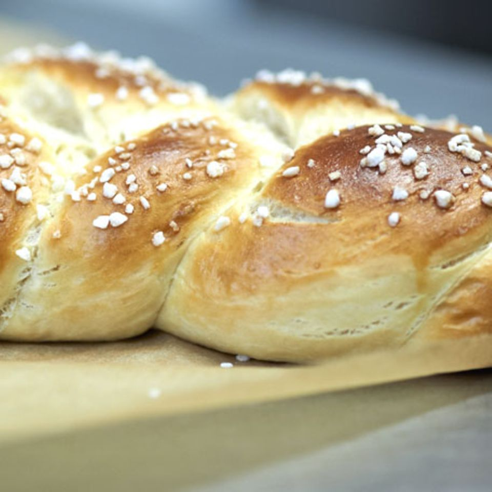

Easter plait

Description
Traditional Easter pastry
Ingredients
- 250 ml milk
- 20 g fresh yeast
- 75 g sugar
- 1 egg 1 (cl. L)
- 1 1/2 tsp. sea salt
- 500 g flour
- 75 g butter (soft)
- Flour (for working)
- 2 tbsp. hail sugar
Steps
-
Mix the milk, yeast, sugar, egg, salt and 250 g flour in a bowl. Let
stand for 30 minutes.
-
Add the butter and the remaining flour and knead the dough for 10
minutes.
-
Cover the dough with a damp cloth and let it rise for 1 hour in a warm
place.
-
Knead the dough again for 5 minutes and divide it into 4 equal parts.
-
Roll out each part into a long sausage and braid the sausages together.
-
Place the braid on a baking sheet lined with baking paper and let it
rise for 30 minutes.
-
Brush the braid with egg yolk and sprinkle with hail sugar. Bake the
braid in the oven at 200 ° C for 20 minutes.